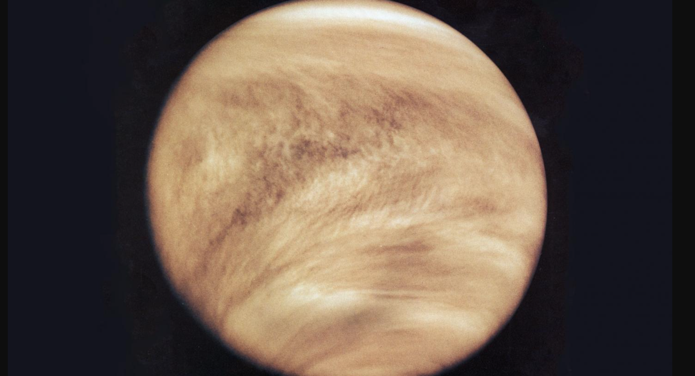

Interesting Facts
Explore some mind-blowing facts!
Fact 1: Honey Never Spoils
Archaeologists have found pots of honey in ancient Egyptian tombs that are over 3000 years old and still perfectly edible.
Fact 2: Bananas are Berries
Botanically speaking, bananas are classified as berries, while strawberries are not!

Fact 3: Octopuses Have Three Hearts
Two pump blood to the gills, while the third pumps it to the rest of the body.

Fact 4: A Day on Venus is Longer than a Year
Venus takes about 243 Earth days to rotate once, but only about 225 Earth days to complete an orbit around the Sun.
Fact 5: Wombat Poop is Cube-Shaped
This unique shape prevents the poop from rolling away, marking their territory effectively.
Fact 6: The Eiffel Tower Can Be 15 cm Taller in the Summer
When a substance is heated up, its particles move more and it takes up a larger volume—this is known as thermal expansion.